Data Scientist & Developer · Sevilla, España
Alejandro Román.
Análisis · Predicción · Impacto.
Del dato en bruto al resultado accionable: análisis exploratorio, visualización, modelado predictivo y despliegue de aplicaciones. Trabajo con Python, Power BI y técnicas de ML y NLP para extraer valor de los datos, y desarrollo aplicaciones web (Django, React, Flask, FastAPI) que resuelven problemas reales.
01 — GenAI & Agentes
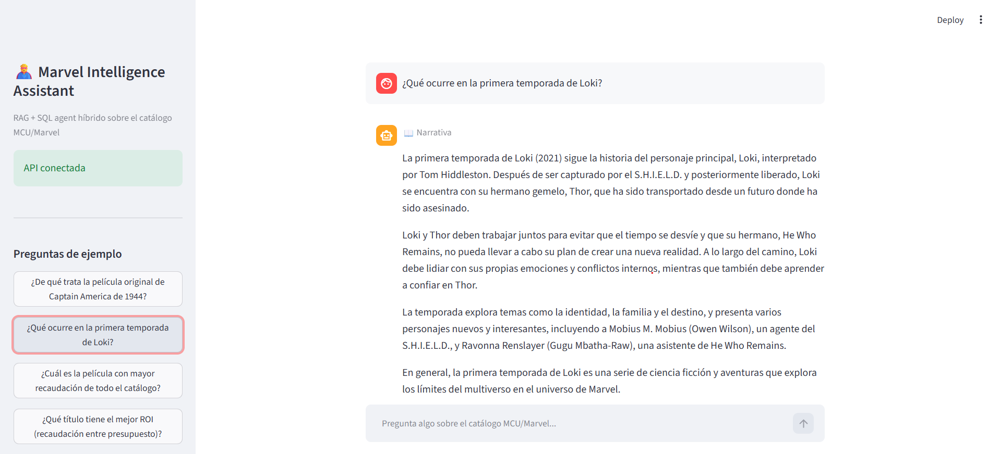
Marvel Intelligence Assistant
Asistente conversacional híbrido RAG + SQL agent sobre el catálogo MCU/Marvel. Router inteligente que clasifica cada pregunta como narrativa, analítica o híbrida y encadena ChromaDB (semántico) con SQLite (tabular) según el caso. 19/19 golden questions, 39 tests con pytest, tracking de experimentos con MLflow y API FastAPI + frontend Streamlit.
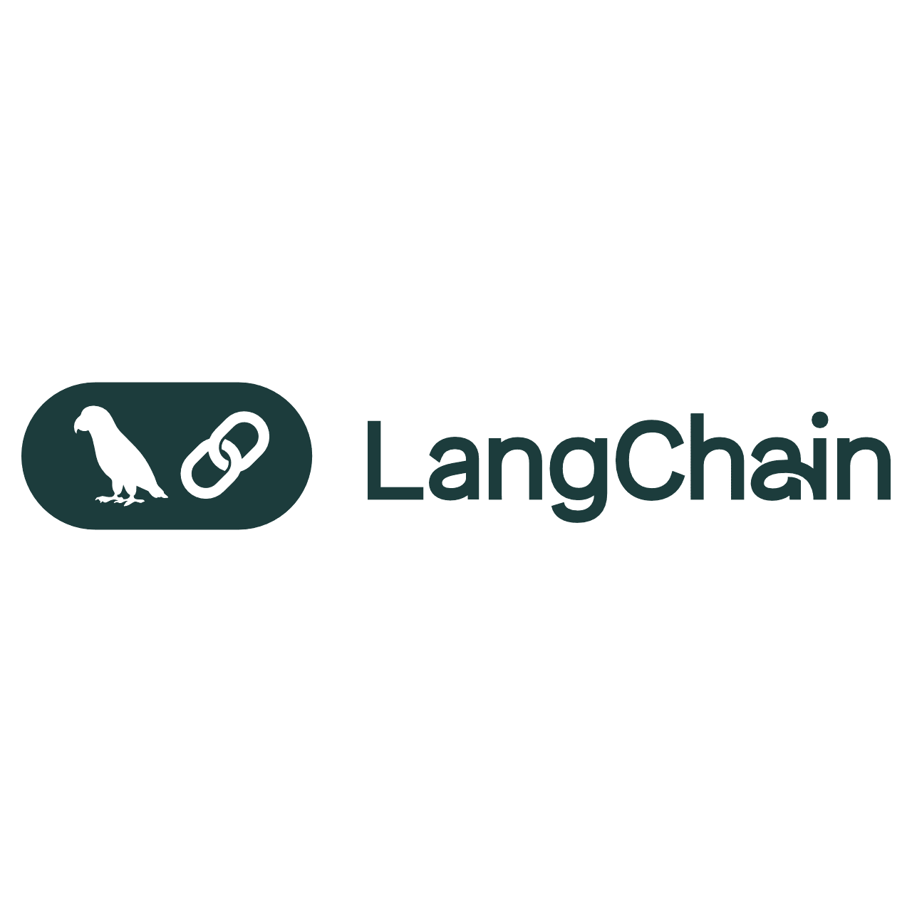
LAILA-RAG
Sistema RAG completamente local sobre el TFM del proyecto LAILA. Chunking semántico por headers (PDF → Markdown → ChromaDB), agente con tools, implementación de HyDE y decisiones técnicas documentadas: trade-offs de retrieval, few-shot leakage y resultados mixtos de HyDE. Sin API keys de pago — todo vía Ollama.
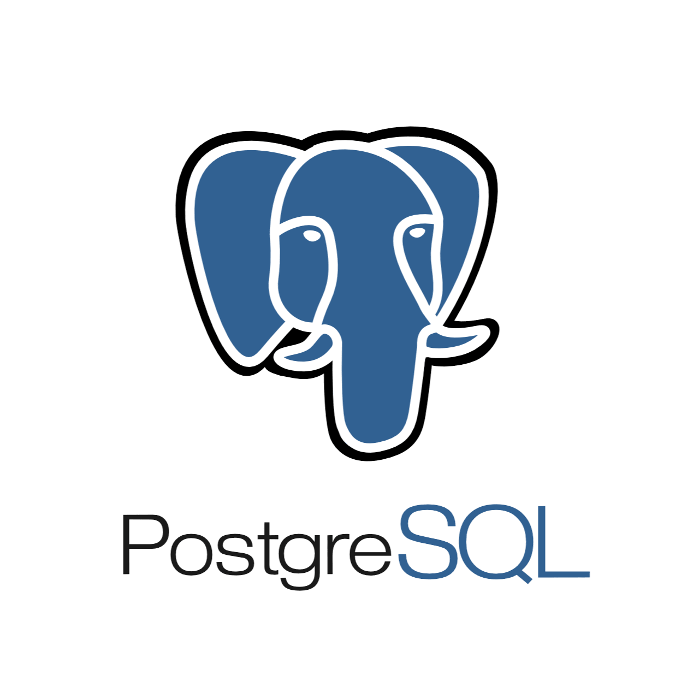
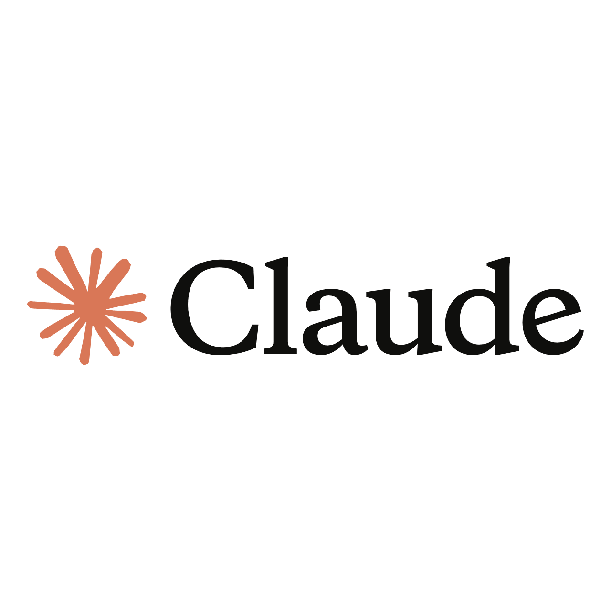
MCP SQL Server
Servidor MCP genérico de solo lectura sobre bases de datos SQL (SQLite y PostgreSQL), construido con el SDK oficial de Python y SQLAlchemy. Expone tres tools estándar para cualquier cliente compatible (Claude Desktop, Claude Code). Guardrails: solo SELECT, whitelist de tablas, LIMIT forzado y timeout por query.
02 — MLOps
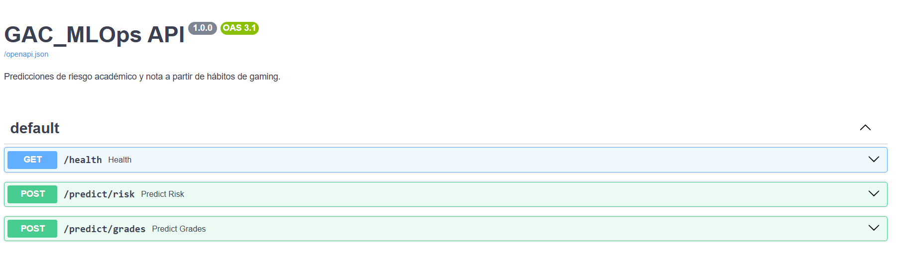
GAC_MLOps — Ciclo de vida ML completo
Pipeline MLOps reproducible sobre datos reales de 8.000 estudiantes: tracking de experimentos con MLflow, versionado de datos con DVC, 16 tests unitarios con pytest y API REST desplegada en Docker. XGBoost con ROC-AUC 0.979 y Random Forest con R² 0.92. Dos endpoints de predicción: riesgo académico y nota esperada.
03 — Aplicaciones web
Wiketing — Plataforma de tickets y soporte interno
Aplicación full-stack de gestión de tickets (helpdesk y seguimiento de tareas). API REST con Django REST Framework (filtros y búsqueda), autenticación JWT, auditoría automática de cambios mediante signals, y frontend React con listado, detalle con historial y comentarios, y un dashboard de métricas (distribución por estado, categoría y prioridad, tendencia mensual y tiempo medio de resolución). Entorno completo con Docker Compose.
Reservas de aulas
Aplicación para gestionar las reservas de aulas de un centro: peticiones del profesorado, aceptación o rechazo por parte de mantenimiento, bloqueo automático de conflictos con reservas aceptadas, series semanales con excepciones por fecha, calendario de consulta y auditoría de quién decide y cuándo. En producción detrás de nginx con HTTPS.
Control de Formación
Control de las actividades formativas del personal: roles de administrador y lector, búsqueda por empleado y por curso, y relación empleado–curso con nivel y horas, sin duplicados. Despliegue nativo en Windows Server como servicio, con PostgreSQL.
EntrevistasExpress
Sistema de agendado de entrevistas multi-campus que automatiza la asignación de entrevistadores: de varias horas de trabajo manual a menos de quince minutos. Actualmente en reestructuración con arquitectura modular, procesos ETL y nuevas funcionalidades.
GestiónPagos
Plataforma para la gestión y seguimiento de pagos de un departamento financiero. Roles de administrador, gestor y supervisor, navegación jerárquica (curso, centro, programa, modalidad y registros) y registro de auditoría inmutable mediante signals.
Intranet corporativa
Intranet con directorio de contactos y buscador por nombre completo, cargado desde Excel mediante un script de importación. Plantillas Jinja2, desplegada como servicio en Windows Server y accesible en la red local.
04 — Automatización
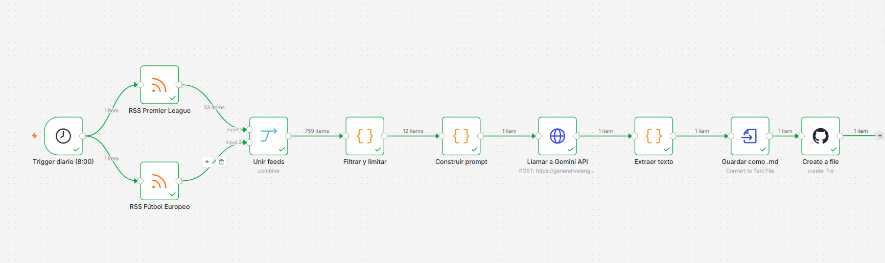
Crónica diaria de fútbol europeo
Workflow de n8n que ejecuta cada día a las 8:00: consume feeds RSS de BBC Sport (Premier League + fútbol europeo), filtra y deduplica noticias, construye un prompt y llama a la API de Gemini para generar una crónica periodística en español, y la sube automáticamente al repositorio de GitHub vía commit nativo — sin git instalado en el servidor.
05 — Machine learning
Predicción de Churn de clientes
Modelo de clasificación para predecir qué clientes tienen mayor probabilidad de abandonar un servicio. Evaluación de distintos algoritmos y optimización de hiperparámetros.
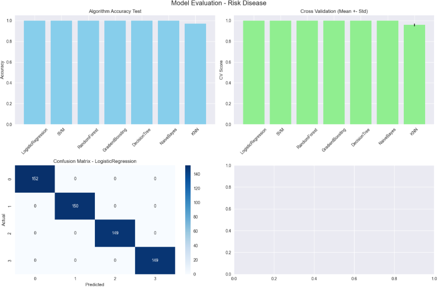
Clasificación de ADN
Comparativa de seis algoritmos (Naive Bayes, Regresión Logística, SVC, KNN, Random Forest, Gradient Boosting) para clasificar secuencias de ADN y evaluar riesgo de enfermedad.
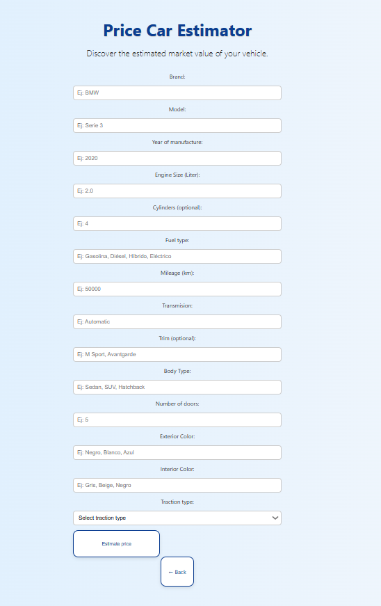
Recomendador de precio de coches
Sistema de recomendación de precio basado en las características del vehículo introducidas por el usuario. Modelo LightGBM integrado en aplicación Flask.
06 — NLP
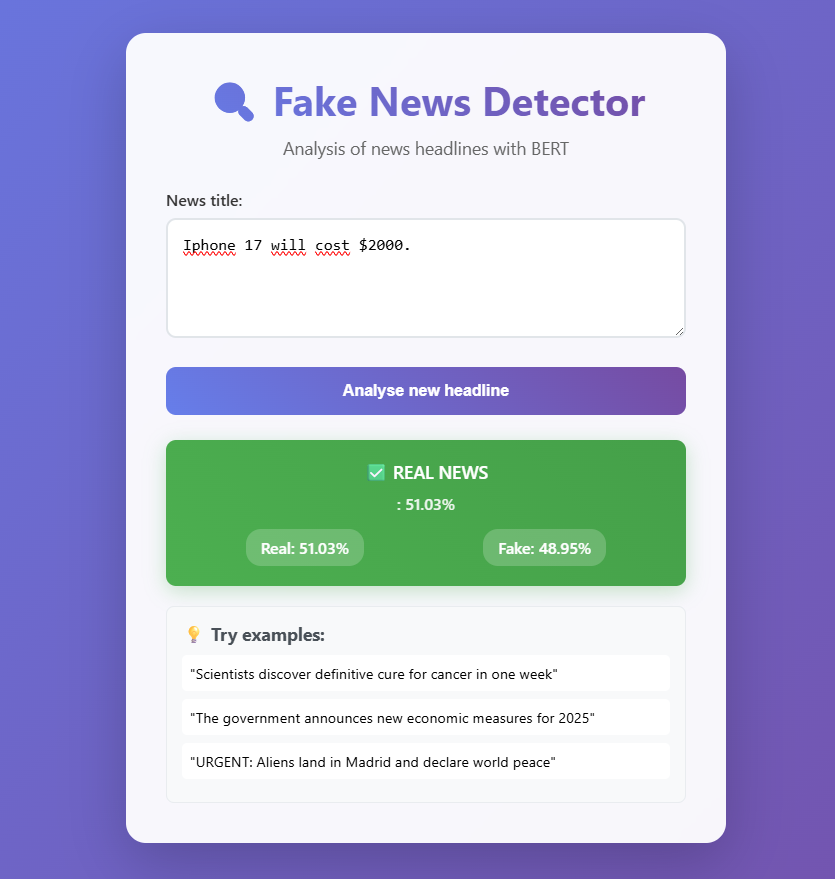
Detector de Fake News con BERT
Modelo BERT fine-tuneado sobre ~60.000 noticias para clasificar titulares como reales o falsos. Preprocesamiento, EDA y despliegue en aplicación Flask.
Generador de letras y melodías — LAILA
GPT-2 fine-tuneado por género (Rock, Pop, Rap) para generar letras a partir de un prompt. AudioCraft (MusicGen) genera la melodía a partir de la letra. Interfaz completa en Flask.
Pop
Rock
Rap
07 — Proyectos integrales
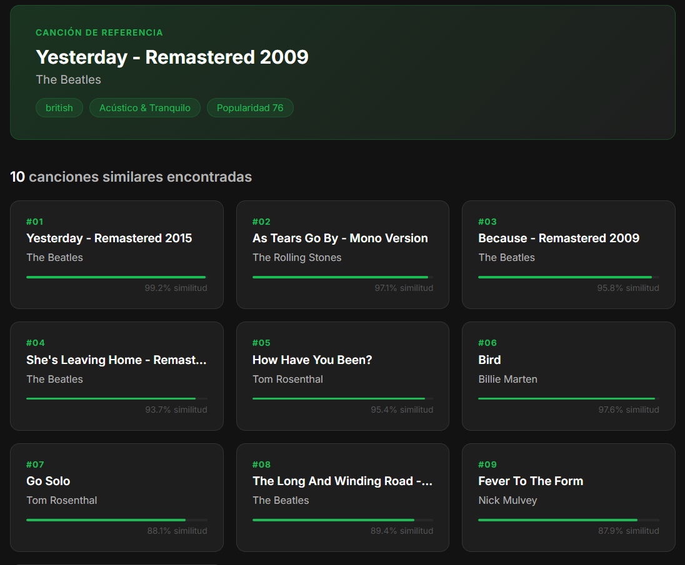
Spotify Music Recommender
Sistema de análisis y recomendación musical sobre 113.422 canciones de Spotify. EDA de audio features, segmentación en 7 clusters mediante K-Means (Silhouette Score: 0.199) y recomendador content-based por similitud coseno con score combinado (70% similitud + 30% popularidad). Dashboard Power BI de 5 páginas y aplicación web Flask con API REST propia.
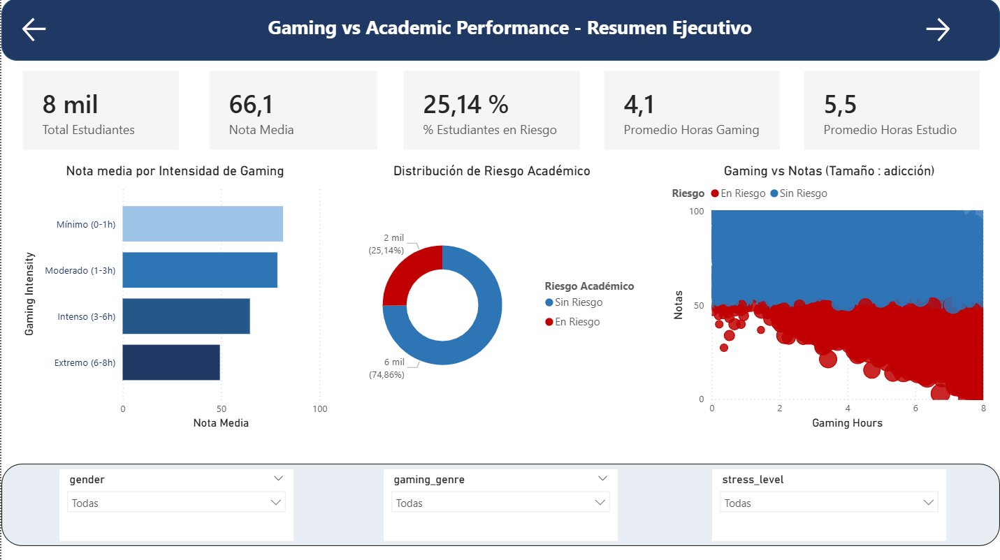
Gaming & Academic Performance
Pipeline completo sobre datos reales de alumnos: análisis exploratorio del impacto del gaming en el rendimiento académico, modelado predictivo con XGBoost y Random Forest, y segmentación de perfiles de jugador mediante clustering. Incluye matrices de confusión, curvas ROC y visualización de resultados.
08 — Análisis de datos

Diabetes Analytics Dashboard
Análisis exploratorio de factores clínicos de riesgo en una población de 768 mujeres con predisposición a diabetes tipo 2. Tres páginas: Executive Summary, Risk Factor Analysis y Demographic Analysis. El 38,67% de las pacientes presenta diagnóstico positivo.

Steam Sales Dashboard
Análisis de precios, descuentos y valoraciones del catálogo de Steam. Estrategia de pricing por categoría, evolución temporal 2006–2025 y ranking de ahorro por título. Ahorro acumulado total: $10.482,60.

Mobile Game In-App Purchases
Segmentación whales · dolphins · minnows en el mercado de videojuegos móviles. Los whales representan el 2,6% de usuarios y generan el 60% de los ingresos totales.

Análisis de tendencias de compras
Análisis del comportamiento consumista y los patrones de compra de clientes de distintas partes del mundo. Información para mejorar el servicio y generar descuentos basándose en los datos obtenidos.